Thinking Machines
Appendix - GitHub Pages
Scientific Publication on GitHub
You can use GitHub Pages to showcase some open source projects, host a blog, or even share your résumé. This guide will help get you started on creating your next website.
Why GitHub Pages?
- Free as in speech and free as in price.
- “Easy” by the standards of web-hosting and scientific publication.
- Cool as heck.
Why not GitHub Pages?
- Reliant on the enduring good graces of Microsoft, which funds GitHub
- Seems to change often in terms of years (not e.g. months)
- Requires lots of tiny changes in lots of places.
Requirements
Steps
- Create a repository.
- GitHub: About repositories
- This class: Repositories
- Add an HTML file to the repository.
- Configure the repository to publish to GitHub Pages.
Step 1
- Already covered in Git - Repositories
- Follow until you have an
index.qmdon GitHub.com
- Follow until you have an
- Extra considerations:
- Name the repository some that will be in the URL
- It will be
<your-github-user>.github.io/<your-repository-name>
- It will be
- Name your Quarto Markdown (.
qmd) fileindex.qmd- This is the default name for a webpage, and makes your life easier.
- Name the repository some that will be in the URL
Step 2
- Already covered in Quarto - Essentials
- Follow until you have an
index.qmdon GitHub.com
- Follow until you have an
- Extra considerations:
- Include
embed-resources: truein your YAML header. - Double check you have a file named
index.html- It is possible to use another name, but not easy.
- Include
Step 3
- This is new content.
- There are many steps, each is essential.
- Skip no steps; perform checks at all steps.
Check 1 - Folder
- You should be working in a local (on your computer) folder that corresponds to a remote (on GitHub) repository.
- I should contain exactly two files.
- Verify with
ls
- Verify with
- If you see anything else, it is wrong, and you should fix it or start over.
Check 1 - Likely mistake
- The most likely other thing to see is the following:
- To fix this:
- Remove
index_files
- Add the following to the YAML header of
index.qmd
- Remove
Check 2 - Repository
- We split this into two checks:
- The local check, at command line.
- The remote check, on GitHub
Remote
- Create a new repository
- Choose names you want.
- Set to public
- If you are uncomfortable publishing under your own name, use a pseudonym and tell me the pseudonym.
- I publish anonymously under names of cities.
Visually pt. 1
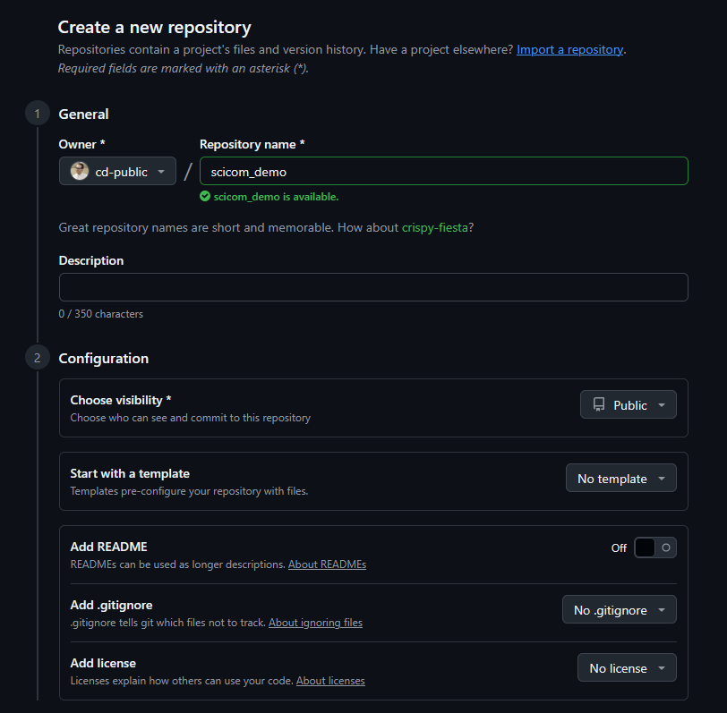
Visually pt. 2
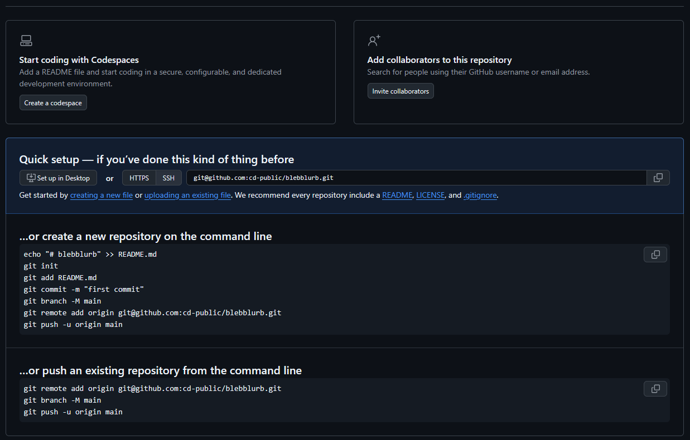
The Bridge
- We connect to the remote as follows…
- You may encounter authentication issues depending on how you set up your account last time.
- This assumes you completed Git - ssh
Bridge Setup
- Wherever your local folder is, do the following:
Connect to Remote
- Take not of the following, which you will have to ensure reflects your repository:
- Do not simply copy-paste this command.
Finalize
- Then push local changes to remote.
Verify Remote
- Ensure your remote repository looks like this:
- It must have exactly two files with exactly these names.
- By the way, exactly means exactly.
Index.htmlwill not work;index.mdwill not work.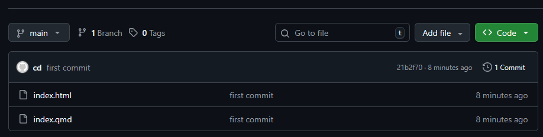
Verify Local (Two Checks)
- Verify The presence of a hidden,
.gitfolder when using the-aflag onls- It will not show up with
lsas it starts with a.
- It will not show up with
- The following status, with
git status- You may get a
hinthere, which may be ignored.
- You may get a
Final Check
- Try making a minor change to your index.qmd
- Render with
quarto - Commit with
git - Push with
git - Check that change shows up on GitHub.
- Render with
- Perhaps add or remove a middle initial from the author.
- Ensure both the
.qmdand.htmlfile change.
- Ensure both the
Step 3
Scientific Publication
- Publishing Science is important:
“ClickOps”
- Click the following things on your screen to publish.
- If your screen looks differently, it means you clicked something else.
- Start over, and if necessary, make a new repository.
Click 0
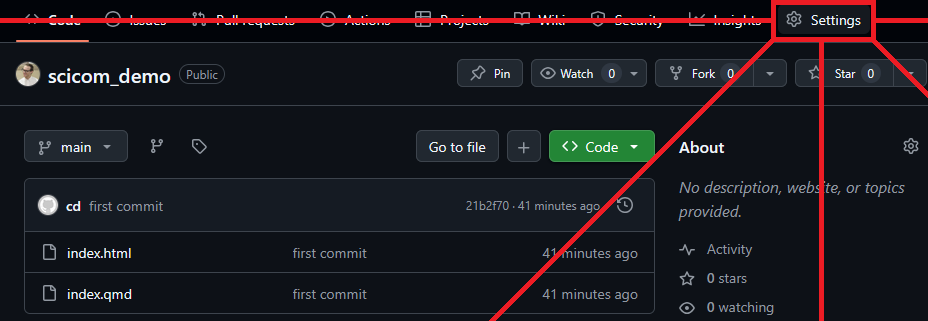
Click 1
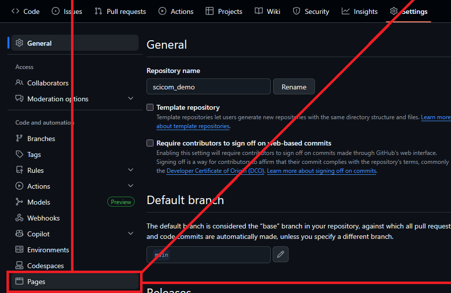
Click 2
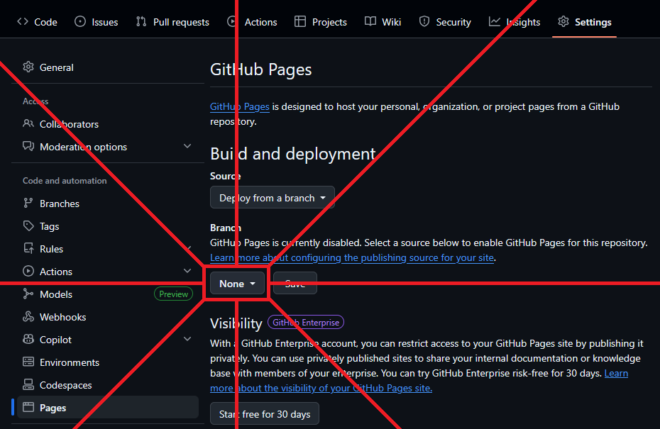
Click 3
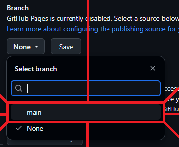
Click 4
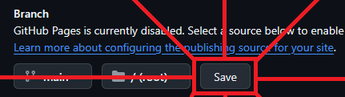
You’re done.
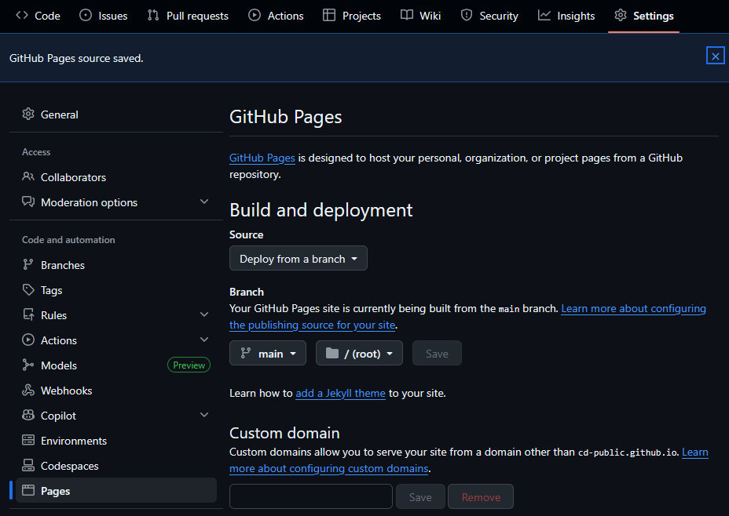
Check it 0
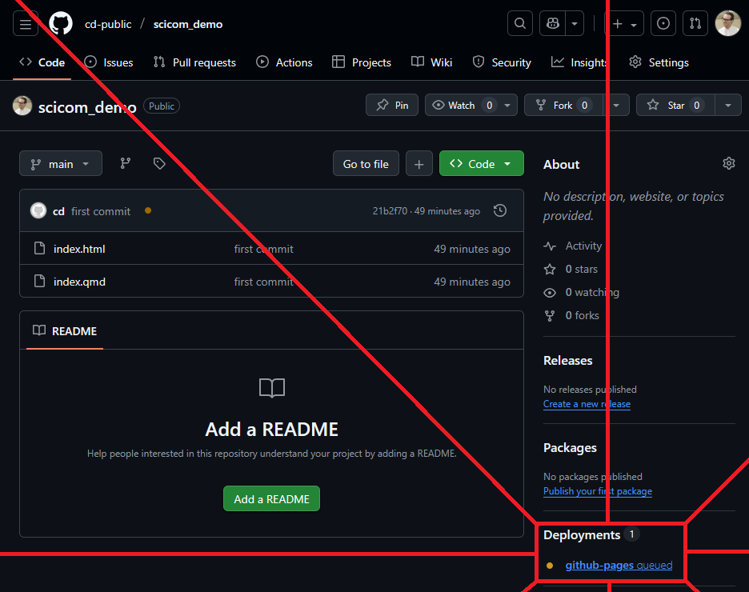
Check it 1
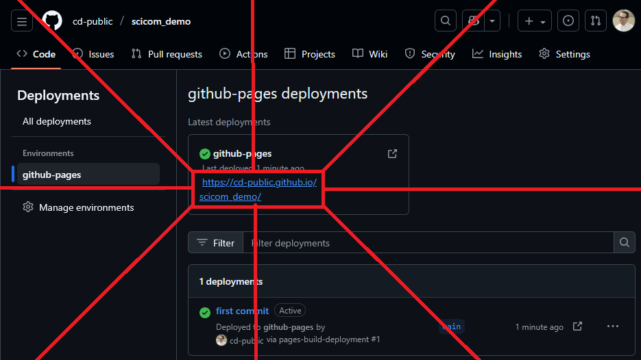
Here’s mine
Exercise
- Publish something.